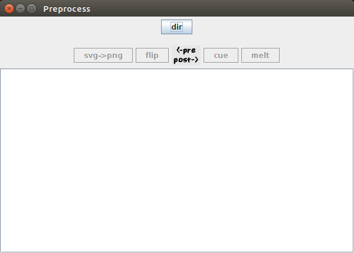
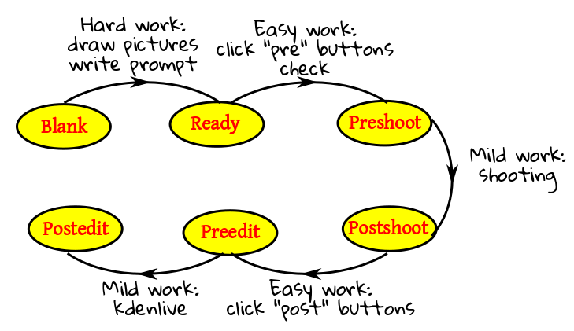

[Home]
Table of contents
Download the bundle, and uncompress it. It
will create a folder structure like this:
vidbase (root folder)
|
+---fromapp
|
+---test (a sample video folder)
|
+---fromapp
|
+---Melter.java
|
+---AndroViewer.java
|
+---Preprocess.java
|
+---Global.java
|
+---icon.png
|
+---sync.png
|
+---transparent.png
Open the Global.java file with an editor. You'll
find these lines near the top:
final private String
base = "/home/cssc/na/s/othernotes/androtalks"; //Change this folder.
Change the red part with the path of the
folder vidbase. For example, if you have put
your vidbase folder in c:\users\sosu,
then you should have:
final private String
base = "c:/users/sosu/vidbase"; //Change this folder.
Note the forward slashes (even in Windows).
Compile, and run. You should get a window like this:
|  |
| Preprocess starting window |
Only the dir button is enabled. Click this, and you
will be presented with a folder open dialog starting with
the vidbase folder. If it starts from any other
folder, you need to check the path that you entered just now.
Leave this window open for the time being. Let us understand the
architecture.
The vidbase folder is the root folder. You'll never
poke outside this. This folder will have one subfolder for each
lecture (one lecture=one output video). These will be called the video folders.
Here I have provided one sample lecture
folder test. A lecture consists of a number of
sessions (continuous shoots). Inside a video folder
there is one session folder for each
session. The fromapp folder (under the root
folder) is for
dumping the output of the app from the tab. Currently, it
contains the output from my mobile, so that you can test the
software even without access to the tab.
As you work with the software, you'll move from one state to
another. There are 6 states in all. Here is an overview of the
workflow:
|  |
| Overview of the steps |
At the very outset you'll choose a video folder to
work on. As you move from one state to the next, the contents of
this folder will evolve. Understanding this evolution
is the key to understanding the states. The detailed workflow
will come later.
-
Blank: In this state the structure of the video
folder is this:
video folder
|
+---fromcamera (blank folder)
|
+---order.txt (blank text file)
This is the very first state.
-
Ready: You arrive at this state after you finish
making the pictures and prompts (optional) for each session. In
this state the video folder contains a
few extra things:
video folder
|
+---fromcamera (blank folder)
|
+---order.txt (see below for its contents)
|
+---intro (session folder 1)
|
+---math (session folder 2)
As we have already mentioned, each session has its
session folder under
the video folder. The names are arbitrary
(e.g., intro and math used above). Each session folder
consists of the slides and (optionally) the prompt file. We
shall give the details later. Most of the images will be in svg
format (output by inkscape), and should have names consisting of a common prefix
followed by a number, e.g., pic1.svg, pic2.svg, pic3.svg,
etc.
I have provided the video folder test
in this state, so that you do not have make the images to test
out the software.
-
Preshoot: Here the video folder
looks like this:
video folder
|
+---fromcamera (blank folder)
|
+---order.txt (see below for its contents)
|
+---intro (session folder 1)
|
+---math (session folder 2)
The file
order.txt specifies the sessions in the correct
order, along with the file prefixes used. A typical example:
intro,r
math,p
This means there are two session folders. The first
is called intro, the second math. In
the first, the svg files have prefix r, and
in the second, the prefix is p.
Note the new subfolder called transfer containing the
things to be transferred to the tab.
-
Postshoot: This state is reached after the shootings
are over, one shooting per session, and the things are
transferred back from the tab to the laptop.
The
fromapp folder (under the root
folder) has the output of the app, and
the fromcamera
folder (under the video folder) now contain the videos shot by the camera.
video folder
|
+---fromcamera (contains the raw videos from the tab)
|
+---order.txt
|
+---intro (session folder 1)
|
+---math (session folder 2)
Preedit: This step is reached after a little technical
processing of the output of the app, resulting in a folder
called mlt under the video folder:
video folder
|
+---fromcamera
|
+---order.txt
|
+---intro (session folder 1)
|
+---math (session folder 2)
|
+---mlt
Postedit: You get to this state after opening kdenlive
and aligning the overlays with the raw videos. Two new things are born
in the video folder: a kdenlive file,
and an mp4 video file, the final output.
-
Blank to Ready: Toughest part. Here you have
to draw the pictures, and create the optional prompt files. We
shall skip this step here, as the provided sample is already in
the Ready state.
-
Ready to Preshoot: Launch Preprocess.java (you
might create a desktop shortcut). Click "dir", choose
the video folder. Click "svg->png". While keeping
this window open, run the AndroViewer.java in parallel. Flip
through the slides using the cursor keys to check
everything. When you are satisfied, hit the "flip" button. This
will generate a
transfer folder under
the video folder. Transfer the
entire transfer folder (not just is contents) to
the tab.
-
Preshoot to Postshoot: Well, shoot!
-
Postshoot to Preedit: Transfer the videos to
the
fromcamera folder under the video
folder, and the output of the app to
the fromapp folder under the root
folder.
Then run
Preprocess.java (or continue to use it, if it is already
running). Click "cue" followed by "melt".
-
Preedit to Postedit: Launch kdenlive, and
import the folders
fromcamera and mlt
into it. Drag them to the timeline, align and render!